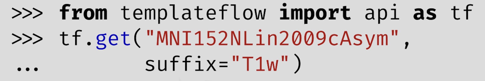

The NiPreps ecosystem for reproducible neuroimaging
The standard design (anti-)pattern for fMRI preprocessing
- Pick a single software package
- Usually based on considerations other than performance


The standard design (anti-)pattern for fMRI preprocessing
- Pick a single software package
- Usually based on considerations other than performance
- String together the tools from that package into a script to run the preprocessing workflow

The standard design (anti-)pattern for fMRI preprocessing
- Pick a single software package
- Usually based on considerations other than performance
- String together the tools from that package into a script to run the preprocessing workflow
- Generallly written by a student or postdoc with little software engineering experience
- Hope it keeps working over time…
- Trust that it does the right thing…
Towards a new design pattern for fMRI preprocessing: fMRIPrep
- A robust workflow for preprocessing fMRI data
- Tested on a large number of fMRI datasets from OpenNeuro
- BIDS allows fMRIPrep to adapt to each dataset and process it in the best way possible
- BIDS-Derivatives allows fMRIPrep to remain “analysis-agnostic” (works as a common interface for downstream analyses)
- Provides powerful visualizations (“individual reports”):
- to help identify problems (QC of methods)
- allowing glass-box access to training researchers (“knowledge scaffold”)
! 
Esteban et al., 2019, Nature Methods
fMRIPrep usage
- Usage tracked using an opt-out telemetry system
- Allows quick identification of bugs and usage patterns

Note
We are developing an open-source alternative called “migas”, to replace Sentry
NiPreps: An ecosystem of Neuroimaging Preprocessing Tools

RF1MH121867: Sites

Poldracklab (Stanford)


Esteban Lab (CHUV Lausanne)

Satterthwaite Lab (Penn)
Milham Lab (Child Mind Inst)
Rokem Lab (UW)
TemplateFlow
Templates and atlases are commonly used in neuroimaging research
There is significant lack of clarity in the use of these templates
- There are numerous versions of the widely used “MNI template”
Templateflow provides programmatic access to a database of templates and mappings between them
Python API client:

Ciric et al., 2022, Nature Methods

Project monitoring: MIGAS
- An open-source, customizable telemetry solution
- Allows collecting usage information, errors, and status throughout a process’s lifetime
- Easy to deploy with various cloud providers (Heroku / GCP / AWS)
- Available as a Python package: https://pypi.org/project/migas/

Mathias Goncalves, in prep